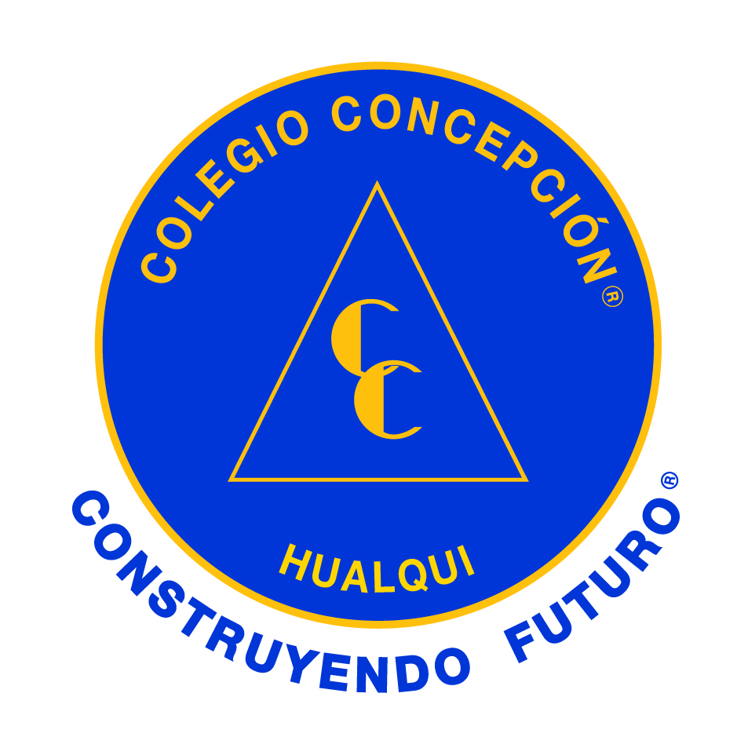

Plan de Formación Ciudadana • Diagnóstico de Evidencias Web y Datos SIMCE (RBD 4922)
Frecuencia porcentual de selección por parte de los profesores en el sitio web.
Puntajes institucionales de Desarrollo Personal y Social (Línea Base Histórica RBD 4922).
Existe una contradicción técnico-pedagógica de alto valor diagnóstico: El **85%** de los reportes ingresados por los profesores valida la presencia de Trabajo Colaborativo en el aula; sin embargo, el SIMCE oficial sitúa la **Participación Ciudadana en un piso de 74 puntos**, el indicador más bajo del establecimiento.
Conclusión: El volumen de datos recopilados en el sitio web demuestra que el trabajo grupal se utiliza estrictamente como una estrategia de ordenamiento técnico (hacer guías en parejas), pero carece del componente de civismo o representatividad estudiantil necesario para impactar los indicadores IDPS de la Agencia de Calidad. Es imperativo transitar del "trabajar juntos" al "deliberar juntos".
Porcentaje de presencia en las planificaciones enviadas por los profesores del bloque superior.
Medición oficial estandarizada de la Agencia de Calidad para el ciclo medio (RBD 4922).
En enseñanza media se evidencia una correlación directa y positiva: El fuerte foco del cuerpo docente en la habilidad web de Pensamiento Crítico y Reflexivo (88%) impacta directamente en un robusto puntaje SIMCE de **Participación Ciudadana (81 puntos)**. Los estudiantes poseen opinión, fundamentos y participan de los procesos.
El punto de quiebre estratégico se sitúa en la **Autoestima Académica (72 puntos)**. Al cruzar cualitativamente las descripciones del formulario, se advierte que los modelos de debate tradicionales implementados en el aula tienden a visibilizar y premiar a los mismos perfiles de estudiantes semestralmente, inhibiendo o menoscabando la autoconfianza escolar de aquellos alumnos con un ritmo de aprendizaje rezagado.